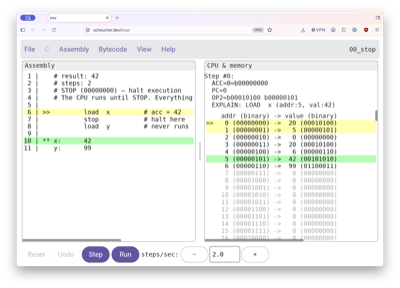
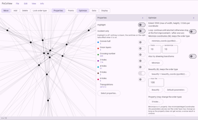
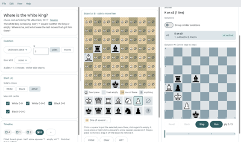

Apps I built with Claude in my free time. They run in the browser and on the desktop. More about them in the Blog.

See how a CPU works: write a program for the 8-bit Toy CPU in C or assembly and step through it while the memory changes in front of you.

Point Configuration Viewer: look at, edit and analyze planar point sets and their order types.
View and explore arrangements of pseudocircles, including the data of the pseudocircles website.

Retro chess puzzles solved with SAT: set up a position, and the solver finds every legal way the game can have reached it.
SAT solvers in the browser: paste a formula in DIMACS format and solve it with one of the four solvers of ksat, ported to plain Kotlin.